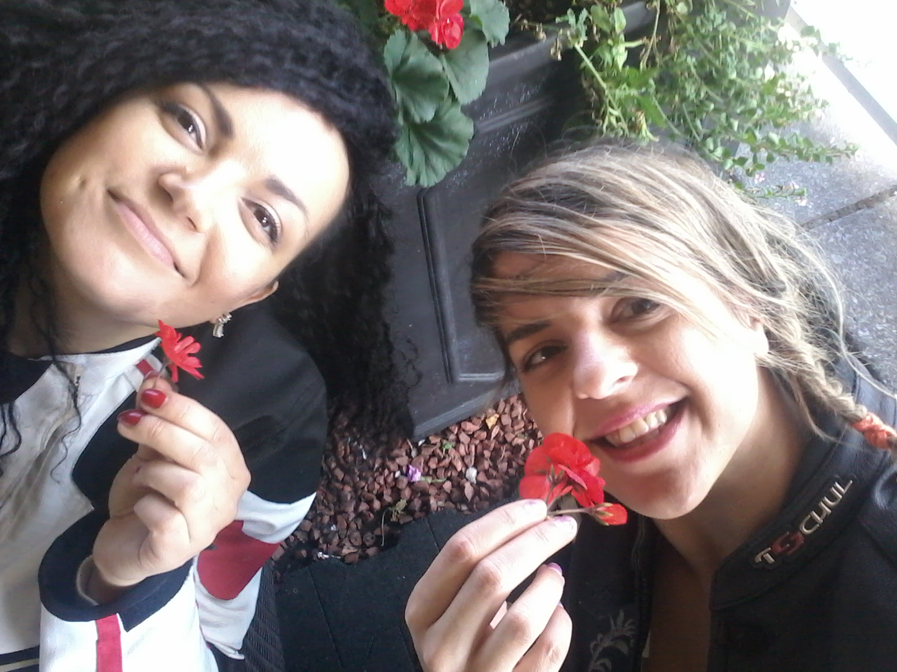

Kasia - Honey Bee
Speed & Ladies Hussaria Ireland
Monica Lubas (Monia)
A journalist on a daily basis. She started writing, and after detecting the addiction to the keyboard, she started therapy on the radio.
In her work she puts a lot of emphasis on motorization, because without this, what life would be without this ...
Since 2009, on the air of Radio GRA, she runs a program "Twist the wrist", a truly motorized program, but keeping up with her is a real miracle. And not because of the beast on two wheels, which she usually rides, but rather because to an unlimited rush of ideas, most of which she implements. She does not like to give up. It drives her every step of the way, she sees inspiration everywhere. The most important thing is to use it well. Her first time on motorcycle took place at the wheel of Intruder 1400, what nothing else was at that moment.
Her first conquests of European roads began on the old, good and forgiving mistakes, Suzuki GS 500E. Now, her biggest friend is her Honda. Her CBR has become a pleasant travel partner and for now this relationship will continue.
Favorite type of driving: tourism. Tourism: preferably away from Polish roads. Road: life, only with two men. Men: it is possible to live without them, or to whom we would need, who we would complain about, who would refresh the driveway to the garage.